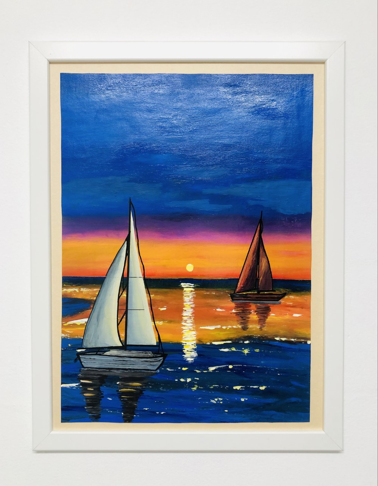
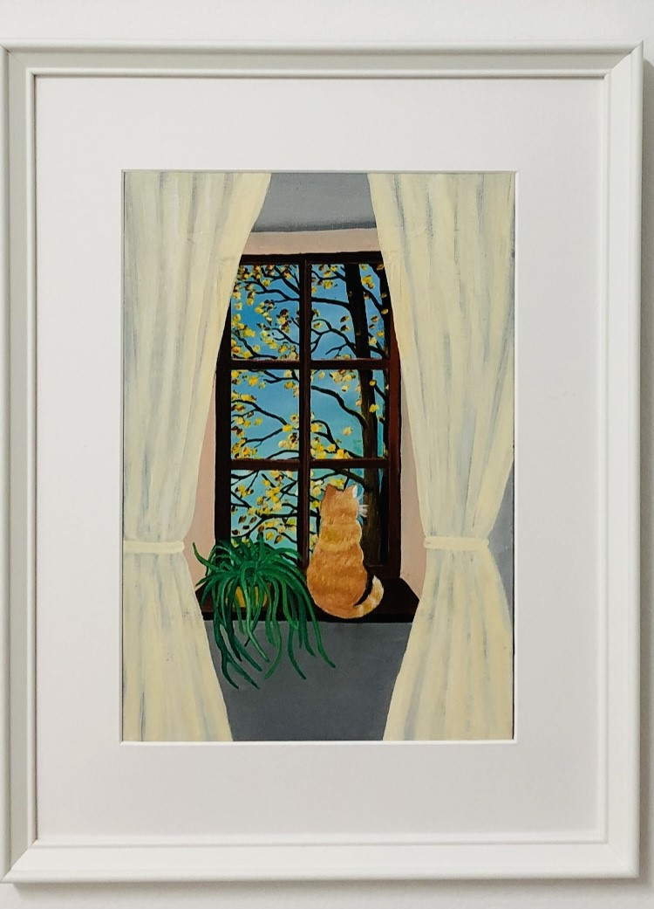

Art Gallery, HTML/CSS practice
How I spend my leisure time - drawing with acrylic paints
I'm drawing just for fun, for my own enjoyment and relax. Drawing makes me feel good, gives me energy.When I draw , I feel like it clears my head, everything around me becomes kind and amazing.
My hobby of drawing started when I was 7 years old.I drew everything I saw around me - a cat that sat on the windowsill, a brother who slept, rain outside the window, snow on trees and roofs of houses,
colourful autumn and trees that once seemed very tall...
Then I had many different other hobbies and interests - choreographic school, books, sport - aikido and karate clubs, professional studies, work,
family, travelling, meeting with friends, family worries , life full of interests.
Not very long ago , about two years ago , I remembered my favourite activity in childhood.
There are some of my paintings

